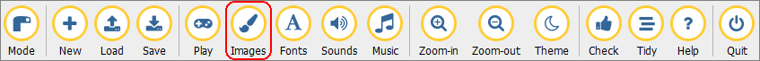

Samenvatting Pygame Zero H1 t/m H4#
Voor de toets in maart over Pygame Zero moet je de volgende technieken beheersen:
Kennen en kunnen voor de toets
Mu Editor in Pygame Zero mode zetten.
De vensterafmetingen van een game instellen.
Een Actor variabele (met een sprite) aanmaken.
De Actor tonen in het gamevenster.
De Actor nauwkeurig positioneren in het gamevenster (bijvoorbeeld exact in het midden, tegen een rand aan, in een hoek).
De Actor laten bewegen met een bepaalde snelheid, horizontaal, verticaal en schuin.
Detecteren wanneer de Actor het venster verlaat of een vensterrand raakt en vervolgens een actie uitvoeren (bijvoorbeeld de Actor terug laten bewegen of verplaatsen naar een andere positie).
De game laten reageren op muisklikken met behulp van de on_mouse_down() functie.
De game laten reageren op toetsenbordactiviteit door in de update() functie met een if statement te checken of een toets wordt ingedrukt. Je moet bijvoorbeeld met de pijltjestoetsen de Actor kunnen laten bewegen.
Hieronder wordt elke techniek nog eens kort toegelicht.
Mu Editor in Pygame Zero mode zetten#
Klik in Mu Editor op de Mode knop en kies vervolgens uit de lijst voor Pygame Zero.


Vensterafmetingen instellen#
De vensterafmetingen van een game stel je in met de constanten WIDTH en HEIGHT. Let op het gebruik van hoofdletters en maak geen typfouten in de namen.
# Vensterafmetingen
WIDTH = 800
HEIGHT = 600
Actor variabele aanmaken#
Een Actor variabele maak je aan met de functie Actor(). Je kunt de naam van een sprite meegeven als argument, uiteraard tussen aanhalingstekens.
# Actors
player_01 = Actor('alien_pink')
player_02 = Actor('alien_green')
Mu Editor zoekt de sprites in de map images die in dezelfde map staat als je Python bestand. Om zeker te weten dat je sprites op de goede plek staan, kun je in Mu Editor op de knop Images klikken. Mu Editor opent dan de juiste map. Staan je sprites daar niet? Dan werkt je game niet.

Wil je dit zelf proberen, download dan de sprites alien_pink.png en alien_green.png en plaats ze in de juiste images map.
Actor tonen in het gamevenster#
Om een Actor te tonen in het gamevenster, roep je de .draw() functie van de Actor variabele aan in de draw() functie van je game.
# draw() functie van de game
def draw():
player_01.draw()
player_02.draw()
Elke Actor variabele heeft zijn eigen .draw() functie, die je aanroept met de punt-notatie.
Actor positioneren#
Voor het positioneren van de Actor moet je goed begrijpen hoe coördinaten in Pygame werken. De linkerbovenhoek van het gamevenster is het punt (0, 0). De x-coördinaat neemt toe naar rechts en de y-coördinaat neemt toe naar beneden. De rechteronderhoek van het gamevenster is dus (WIDTH, HEIGHT).
Elke Actor heeft een .x en .y variabele. Je kunt de waarden van deze variabelen instellen om de Actor te positioneren.
# Startposities
# player_01 begint op (100, 300)
player_01.x = 100
player_01.y = 300
# player_02 begint op (700, 300)
player_02.x = 700
player_02.y = 300
Wil je een Actor exact in het midden van het gamevenster plaatsen, gebruik dan de constanten WIDTH en HEIGHT.
# player_01 begint in het midden van het venster
player_01.x = WIDTH / 2
player_01.y = HEIGHT / 2
Ook als je een Actor op een bepaalde afstand van de rechter- of onderkant van het venster wilt plaatsen, gebruik je de constanten WIDTH en HEIGHT.
# player_02 begint op 50 pixels van de rechterrand
# en 200 pixels van de onderrand
player_02.x = WIDTH - 50
player_02.y = HEIGHT - 200
De variabelen .x en .y bevatten de coördinaten van het middelpunt van de sprite. Soms wil je echter niet het middelpunt positioneren, maar bijvoorbeeld de rechterbovenhoek van de sprite, of de linkeronderhoek. Dan gebruik je de variabelen .left, .right, .top en .bottom.
# player_01 begint in linksonder in het venster
# plaats de linkeronderhoek van de sprite op (0, HEIGHT)
player_01.left = 0
player_01.bottom = HEIGHT
# player_02 begint in rechtsboven in het venster
# plaats de rechterbovenhoek van de sprite op (WIDTH, 0)
player_02.right = WIDTH
player_02.top = 0
Actor laten bewegen#
Om een Actor te laten bewegen, verander je de waarden van de .x en .y variabelen in de update() functie van je game. Deze functie wordt automatisch 60 keer per seconde aangeroepen.
# update() functie van de game
def update():
# beweeg player_01 1 pixel naar rechts
player_01.x += 1
# beweeg player_02 2 pixels omhoog
player_02.y -= 2
Wil je de Actor schuin laten bewegen, dan moet je zowel de .x als de .y variabele veranderen.
# update() functie van de game
def update():
# beweeg player_01 naar linksonder
player_01.x -= 5
player_01.y += 5
Denk eraan dat je in de draw() functie screen.clear() aanroept om de achtergrond te verversen. Anders blijven de oude posities van de Actors zichtbaar.
# draw() functie van de game
def draw():
screen.clear()
player_01.draw()
player_02.draw()
Detecteren van vensterranden#
In de update() functie kun je controleren of een Actor het venster verlaat. Je doet dat met een if statement. Je gebruikt hierbij vaak de variabelen .left, .right, .top en .bottom van de Actor en de constanten WIDTH en HEIGHT van het venster.
# update() functie van de game
def update():
# beweeg player_01 naar rechts
player_01.x += 3
# als player_01 de rechterrand raakt, zet hem dan terug naar de linkerrand
if player_01.right > WIDTH:
player_01.left = 0
In de code hierboven wordt de Actor naar de linkerkant van het venster verplaatst zodra zijn rechterkant voorbij de rechter vensterrand komt. Je kunt ook wachten tot de Actor helemaal uit beeld is verdwenen:
# update() functie van de game
def update():
# beweeg player_01 naar rechts
player_01.x += 3
# als player_01 rechts buiten beeld is, zet hem dan terug naar links buiten beeld
if player_01.left > WIDTH:
player_01.right = 0
In bovenstaande code gebeurt er pas iets zodra de linkerkant van de Actor voorbij de rechter vensterrand is. De Actor wordt dan links net buiten beeld geplaatst.
Als je de bewegingsrichting van de Actor wilt veranderen zodra hij een vensterrand raakt, dan heb je een extra variabele nodig die de snelheid van de Actor bevat. Deze variabele kun je dan veranderen van positief naar negatief of andersom.
player_01 = Actor('alien_pink')
player_01.speed = 3
# update() functie van de game
def update():
player_01.x += player_01.speed
if player_01.right >= WIDTH:
player_01.speed = -3
elif player_01.left <= 0:
player_01.speed = 3
Bovenstaande code kun je korter schrijven op de volgende manier:
player_01 = Actor('alien_pink')
player_01.speed = 3
# update() functie van de game
def update():
player_01.x += player_01.speed
if (player_01.right >= WIDTH) or (player_01.left <= 0):
player_01.speed = -player_01.speed
Uiteraard kun je deze technieken ook gebruiken met de boven- en onderkant van het venster.
Reageren op muisklikken#
Voor het reageren op muisklikken gebruik je de on_mouse_down() functie. Deze functie wordt automatisch aangeroepen zodra de speler op een muisknop drukt. Via de parameters button en pos kun je achterhalen welke muisknop is ingedrukt en waar de muiscursor zich bevindt.
# on_mouse_down() event handler
def on_mouse_down(button, pos):
if button == mouse.LEFT:
print(f'Linkermuisknop ingedrukt op positie {pos}.')
elif button == mouse.RIGHT:
print(f'Rechtermuisknop ingedrukt op positie {pos}.')
Met de collision detection functie .collidepoint() van de Actor kun je controleren of de muisklik op de Actor was.
# on_mouse_down() event handler
def on_mouse_down(button, pos):
if player_01.collidepoint(pos):
print('De roze alien is aangeklikt!')
elif player_02.collidepoint(pos):
print('De groene alien is aangeklikt!')
Reageren op toetsenbord#
Voor het reageren op toetsaanslagen kun je twee wegen bewandelen:
Definieer een on_key_down() en/of een on_key_up() event handler. Deze functies worden automatisch aangeroepen zodra een toets wordt ingedrukt of losgelaten.
Deze manier is minder geschikt voor situaties waarin de speler een toets ingedrukt houdt, bijvoorbeeld om een Actor te besturen. De functies worden namelijk niet herhaaldelijk aangeroepen.
Gebruik een if statement in de update() functie om te controleren of een toets is ingedrukt. Deze functie wordt automatisch 60 keer per seconde aangeroepen.
Deze manier is minder geschikt voor situaties waarin je slechts één keer wilt reageren per toetsaanslag.
Met de volgende code kun je het verschil tussen de twee manieren goed zien.
# on_key_down() event handler
def on_key_down(key):
if key == keys.A:
player_01.x -=5
elif key == keys.D:
player_01.x +=5
# update() functie van de game
def update():
if keyboard[keys.LEFT]:
player_02.x -= 5
elif keyboard[keys.RIGHT]:
player_02.x += 5
De roze alien wordt bestuurd met de A en de D toetsen. De groene alien wordt bestuurd met de linker- en rechterpijltjestoetsen. Om de roze alien te bewegen moet je heel vaak de A of D toets indrukken. De groene alien beweegt echter soepel met de pijltjestoetsen, die je gewoon ingedrukt kunt houden.
Let op het verschil tussen de if statements in de on_key_down() functie en de update() functie. In de on_key_down() functie gebruik je if key == keys.KEYCODE en in de update() functie gebruik je if keyboard[keys.KEYCODE]. De KEYCODE is een constante die je kunt vinden in de Pygame Zero documentatie.